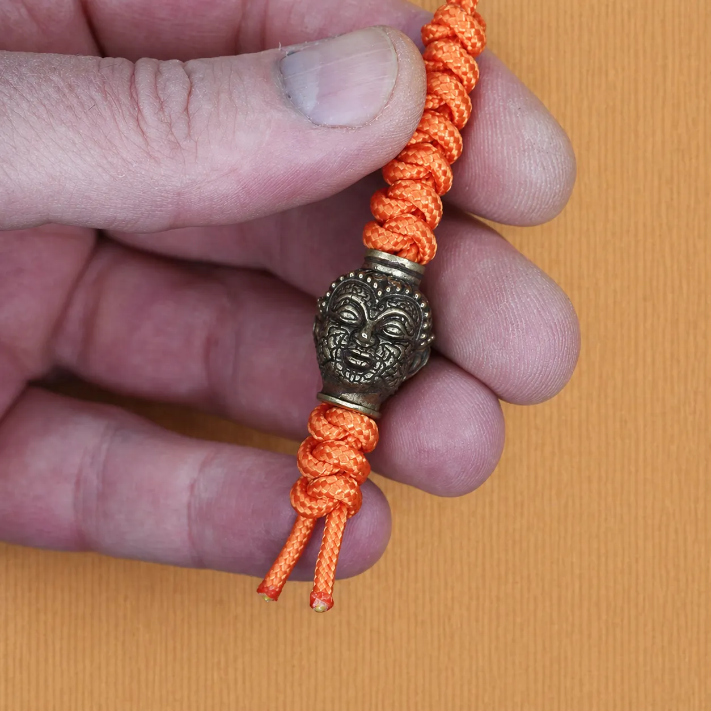
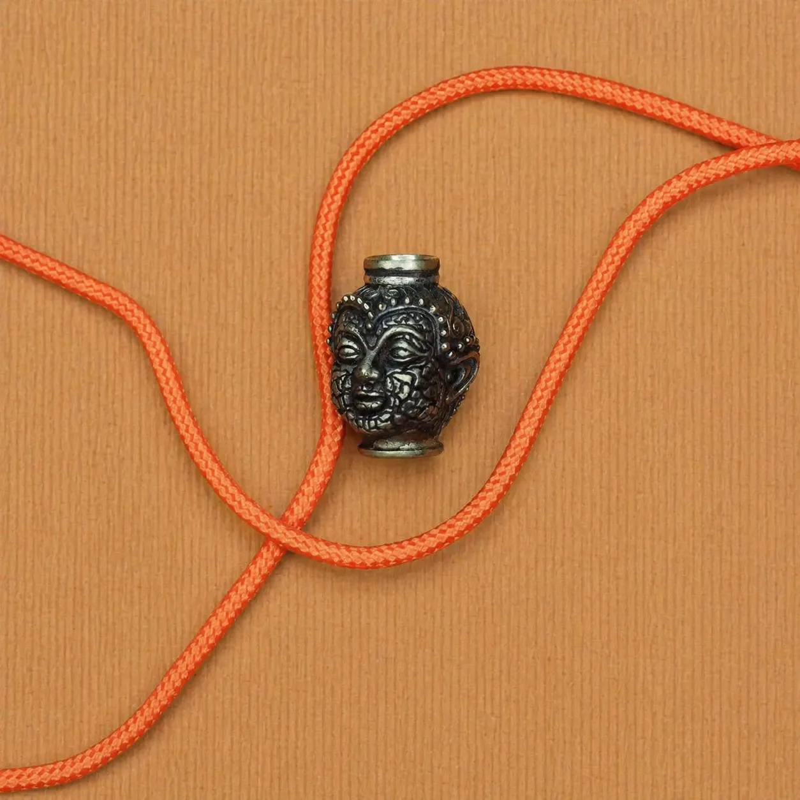
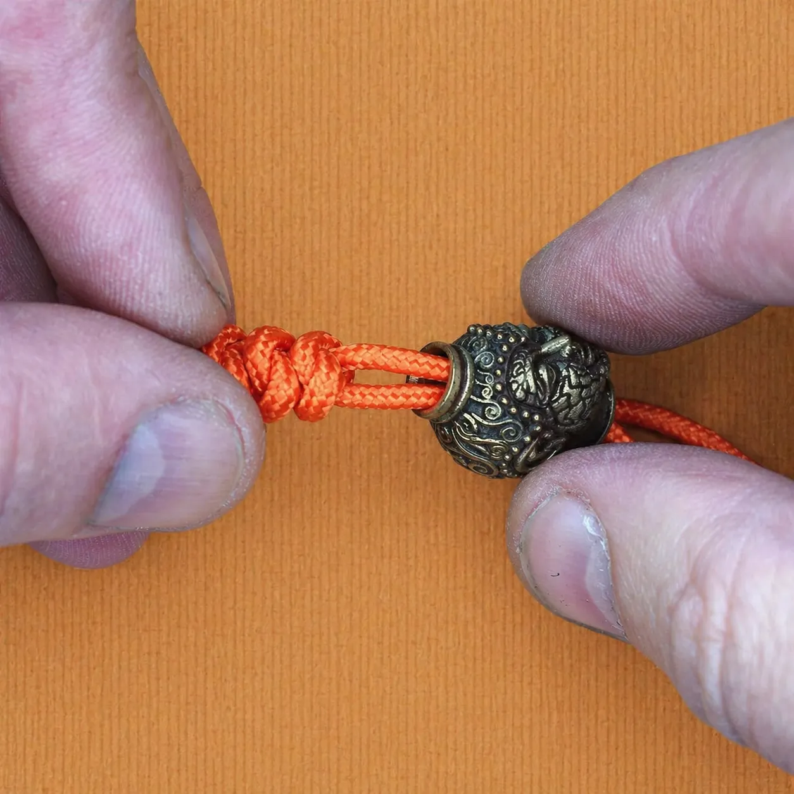
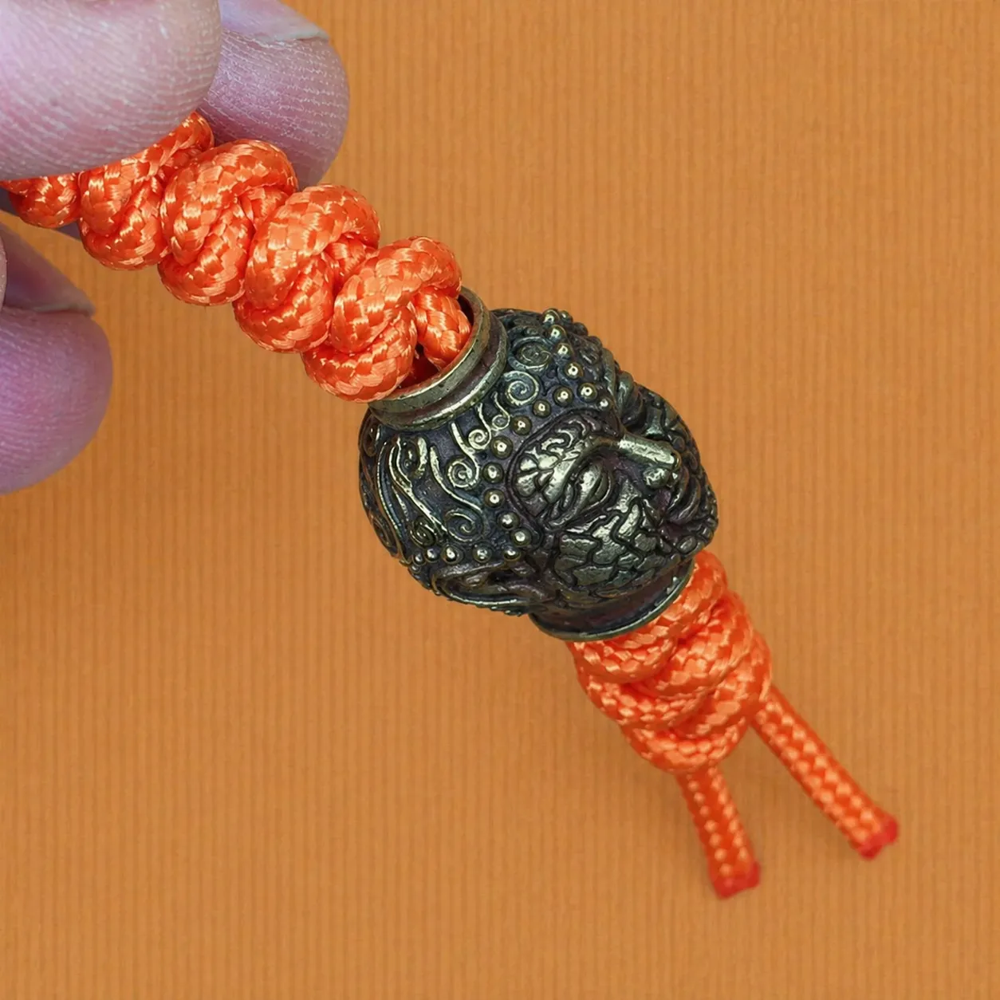
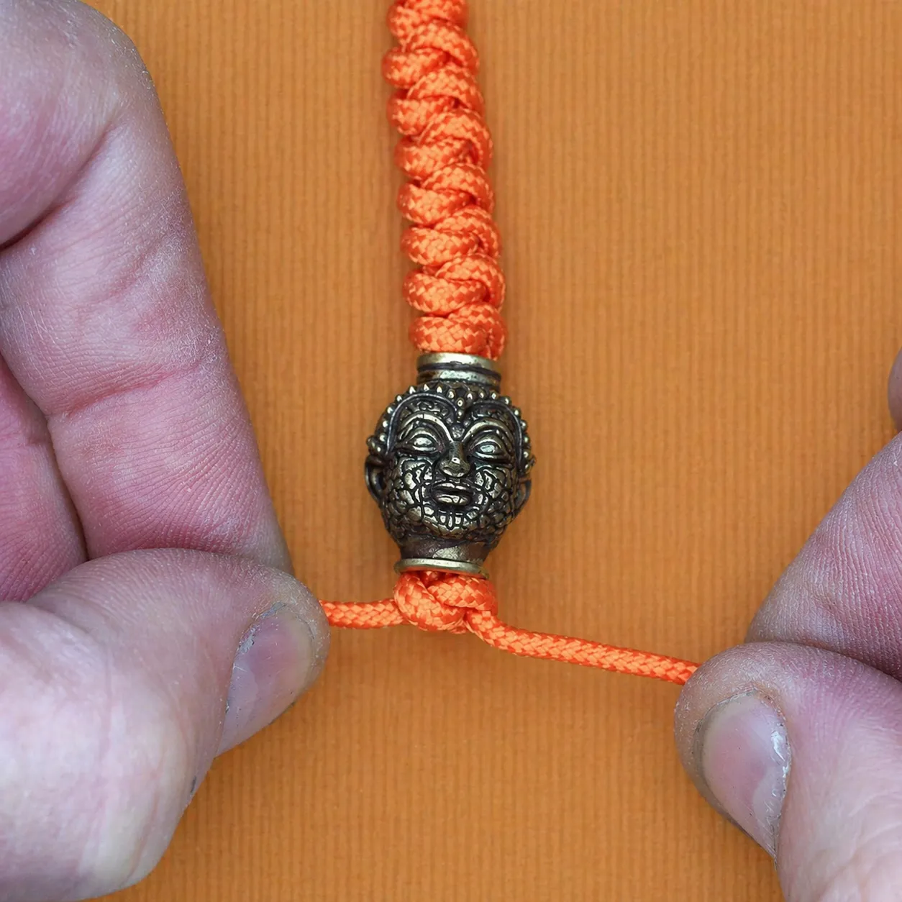
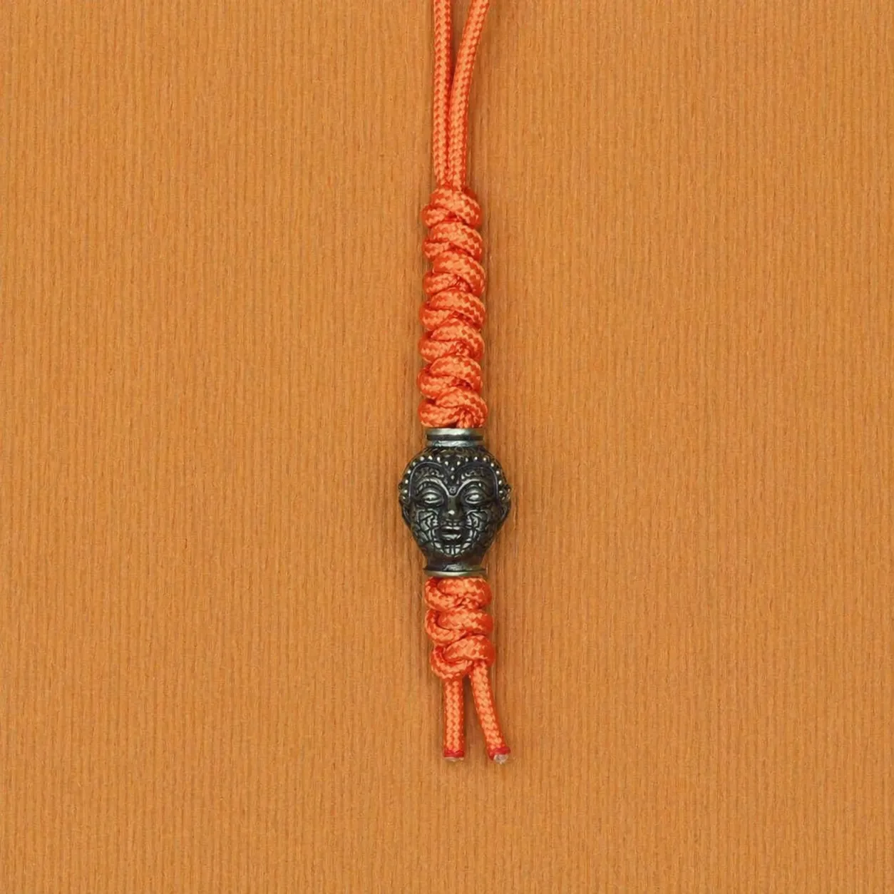

Добавить бусину в темляк из паракорда — это один из способов сделать изделие более функциональным и персонализированным.

В этом материале разбираем пошагово, как вплести бусину в темляк: где её разместить, какое отверстие подобрать и как надёжно зафиксировать. Если вы хотите понять, какую бусину выбрать для темляка, посмотрите статью темляк с бусиной.
Что понадобится

- Паракорд 275
- Темлячная бусина с отверстием от 3 мм
- Ножницы
- Зажигалка
Какое отверстие должно быть у бусины
Для паракорда 275 оптимальное отверстие — от 3 мм. Если бусина с меньшим отверстием, лучше использовать сложенный шнур или выбрать бусину с большим отверстием.
Для двух жил паракорда отверстие должно быть не менее 4–5 мм.
Где разместить бусину в темляке
Бусина в темляке работает не только как декор. Она добавляет вес, улучшает хват и помогает быстрее найти темляк на ощупь.
- В нижней части. Бусина надевается на концы основы после завершения плетения. Это самый распространённый вариант.
- В середине. Бусина вплетается между узлами как декоративный элемент.
- Как фиксатор. Бусина не даёт узлу соскользнуть.
Пошаговая инструкция
Завершите плетение темляка

Сплетите нужную длину темляка выбранным способом: змейка, рыбий хвост, кобра или другое плетение.
Наденьте бусину на концы

После завершения плетения наденьте бусину на оба конца паракорда. Бусина должна свободно проходить через отверстие.
Зафиксируйте бусину узлом

Под бусиной завяжите фиксирующий узел. Подойдёт змеиный узел или простой узел. Затяните и подравняйте концы.
Обрежьте и оплавьте концы

Обрежьте лишний паракорд и аккуратно оплавьте концы зажигалкой, чтобы они не распускались.
Какие бусины подходят
Для темляка из паракорда подходят:
Мастер-классы с бусиной
Что делать дальше
Если этот материал уже разобран, дальше лучше перейти к ближайшим связанным темам — без длинного списка и лишних повторов.
FAQ
Бусина слетит при использовании?
Нет, если правильно зафиксировать её узлом под бусиной. Концы должны быть аккуратно оплавлены.
Какой диаметр отверстия нужен?
Минимум 3 мм для паракорда 275. Для двух жил — 4–5 мм.
Можно ли добавить бусину в любое плетение?
Да, бусину можно добавить практически к любому плетению темляка.